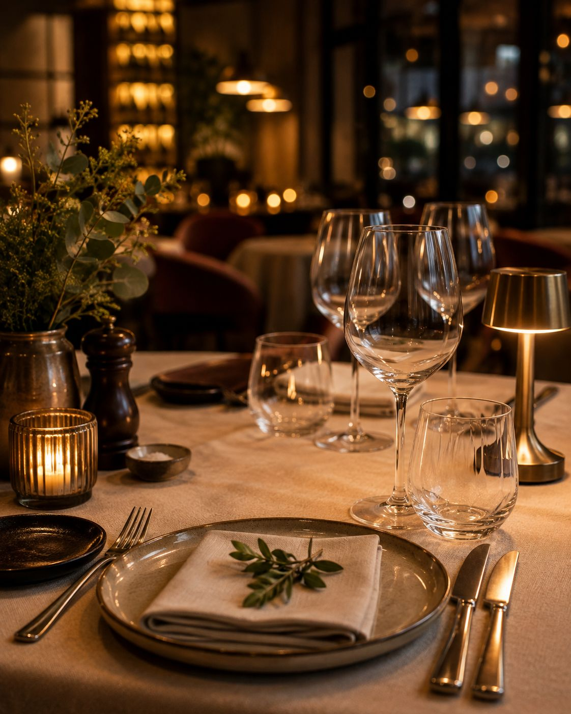
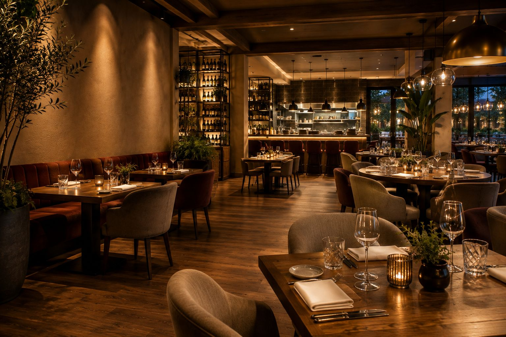
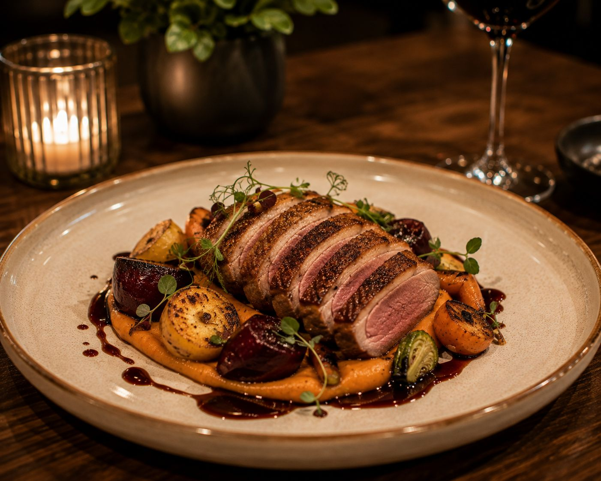
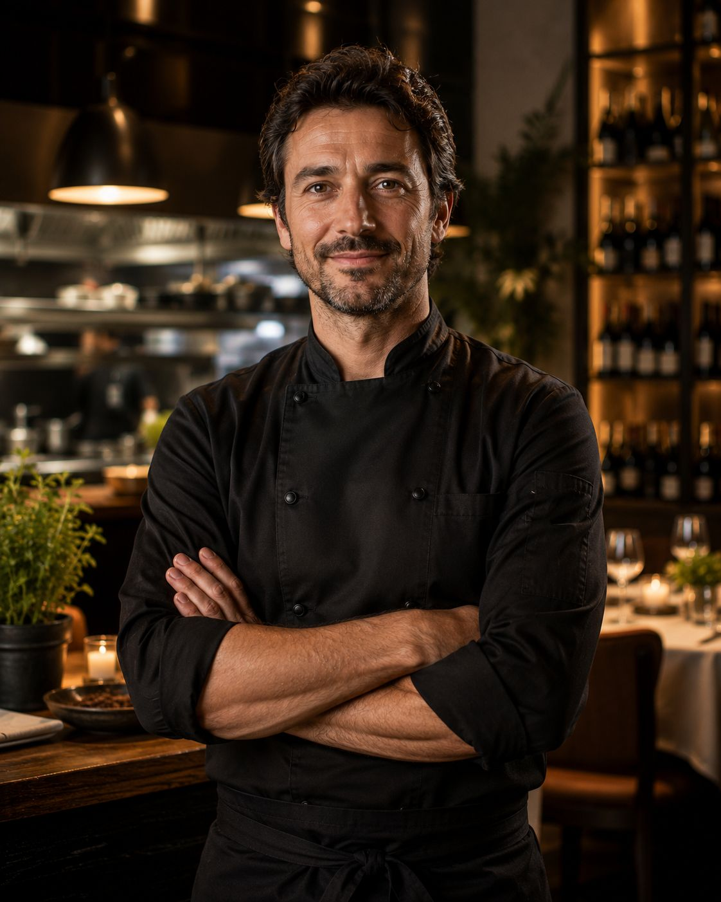
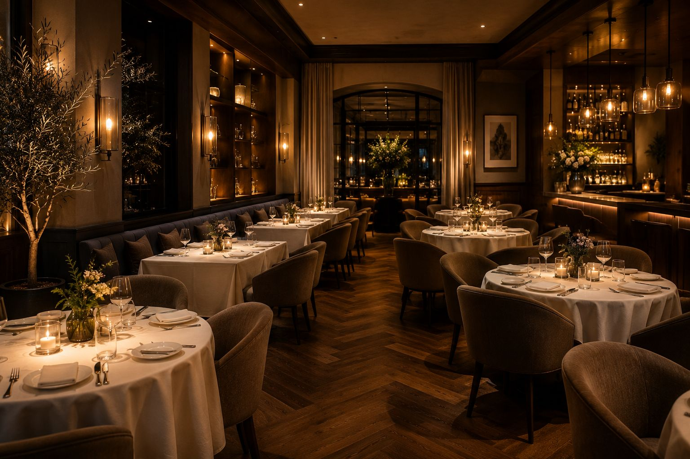
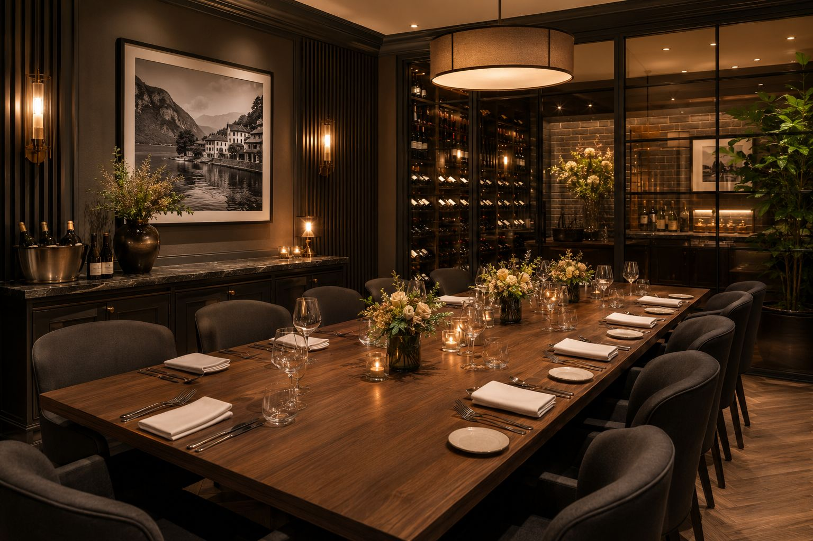
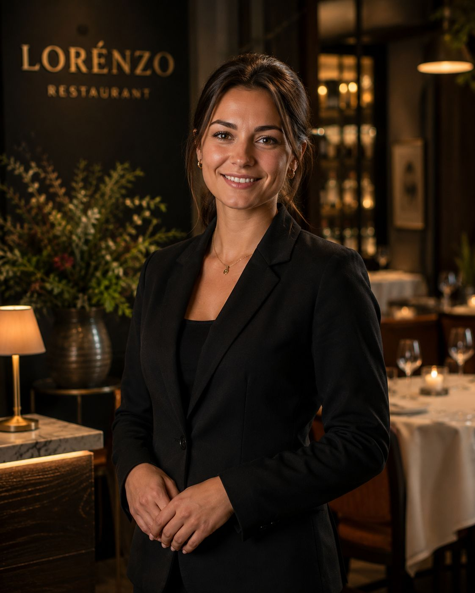

Frisse starters
Korte gerechten met lichte smaken voor een sterke start van de service.
Restaurant Demo v1.0
Deze demo toont hoe een restaurantwebsite structuur, sfeer en conversie samenbrengt in een professioneel en mobielgericht ontwerp.

Reservatieflow
De flow toont bewust het verschil tussen aanvraag en bevestigde reservatie. Zo blijft de verwachting voor bezoekers correct en professioneel.
Ook private dining en groepsreservaties kunnen via dezelfde aanvraagroute correct worden voorgelegd.
Belangrijk: deze knop verstuurt een aanvraag. Een bevestiging volgt altijd na controle.
Over het restaurant
Deze sectie is bedoeld om de keukenvisie, serviceaanpak en teamdynamiek van een echte zaak professioneel te tonen zonder overdreven claims.
De componenten zijn voorbereid voor echte bedrijfsgegevens, echte teaminformatie en een duidelijk, commercieel verhaal.


Sfeer en galerij



Reviews
Deze demosectie gebruikt geen fictieve scores of platformbadges. Echte reviews kunnen later in dit component worden geplaatst.
Voorzien voor korte quote, naam en context zodra echte feedback beschikbaar is.
Identieke opbouw voor consistente presentatie van meerdere gastreacties.
Openingsuren
De layout is uitgewerkt om echte openingsuren snel scanbaar te tonen zodra de zaakgegevens ingevuld worden.
Locatie en contact
De contactcomponent is ontworpen voor adres, telefoon, e-mail en route, met reservatie als primaire actie.
Eind-CTA
De structuur, componenten en mobiele flow zijn klaar om op echte zaakgegevens en echte content te worden toegepast.